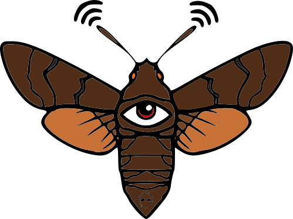

Humming Hawk - Jest to mój amatorski projekt, w którym zamierzam zbudować idealny bezzałogowy statek powietrzny z zastosowaniem do hackingu.
Ma to być dron w pełni modularny - mam tutaj na myśli, że możemy dowolnie podłączać i odłączać potrzebne nam moduły.
Jeżeli akurat potrzebujemy przechwycić, a następnie odtworzyć fale radiowe to podłączamy do tego odpowiedni moduł, a jeżeli chcemy np. tylko i wyłącznie
zrobić rekonesans to nie koniecznie potrzebujemy całego osprzętu do hakowania fal. Po co marnować miejsce i baterię na zbędne rzeczy.
Dron ma być cichy, wydajny i wytrzymały. Będę się starał zrobić to jak najlepiej i nie wiem czy mi się to uda, ponieważ jestem totalnym amatorem
w elektronice, a co dopiero w budowaniu pojazdów latających. Mam jednak chęci i cel, który zamierzam zrealizować. Jako, że jestem uczniem szkoły średniej
bez, póki co bez żadnego źródła dochodów poza kieszonkowym, każda pomoc finansowa jest mile widziana. Jeżeli chcesz mnie wesprzeć, będę bardzo wdzięczny i zapraszam na
moją
zrzutkę.